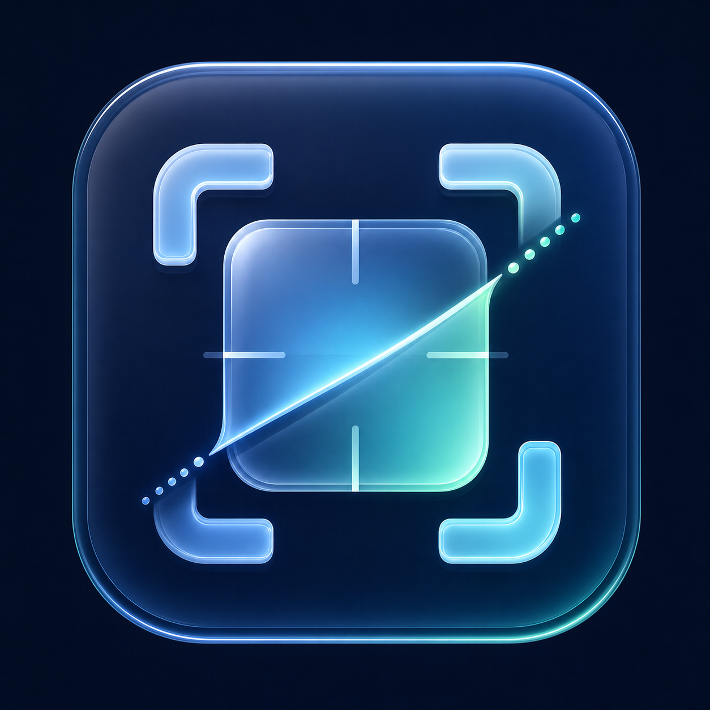
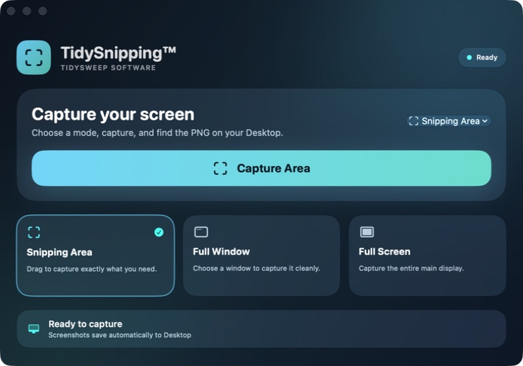
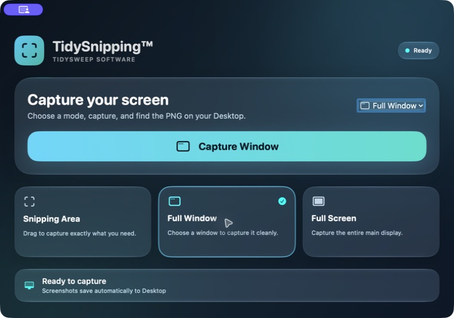
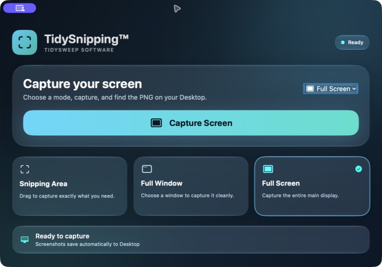
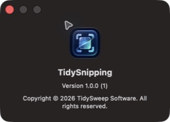

macOS 13+ · Version 1.0.0
TidySnipping
Capture an area, window, or full screen and save a PNG automatically to your Desktop.
Current build is ad-hoc signed and not Apple-notarized. Screen Recording permission is required for capture.
Product screenshots



